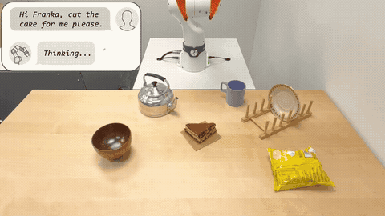
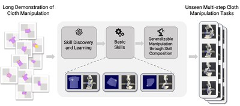
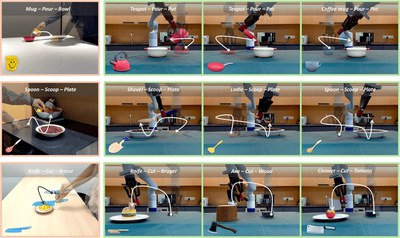
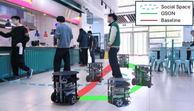
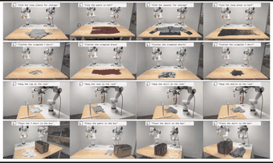
CLASP: General-Purpose Clothes Manipulation with Semantic Keypoints
International Journal of Robotics Research (IJRR), 2026
IEEE International Conference on Robotics and Automation (ICRA), 2025
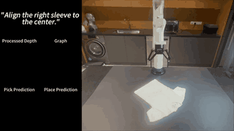
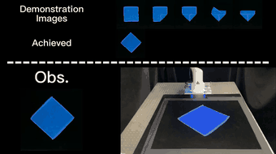
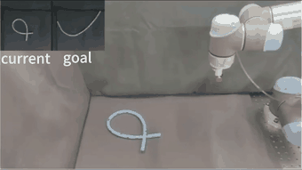
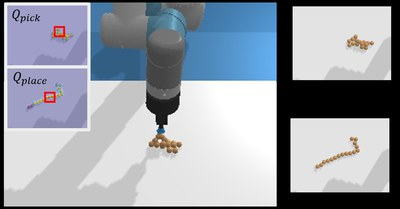
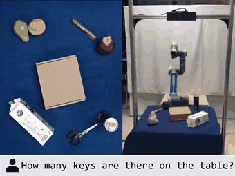
MQA: Answering the Question via Robotic Manipulation
Robotics: Science and Systems (RSS), 2021
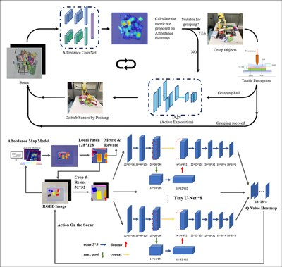
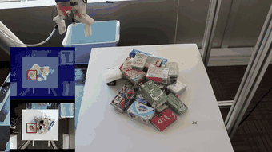
2026
Joined the Learning and Intelligent Systems (LIS) Group at MIT CSAIL as a visiting Ph.D. student.
2026
CLASP published in the International Journal of Robotics Research (IJRR).
2025
MimicFunc accepted to CoRL 2025.
2025
One paper accepted to IROS 2025.
2025
CLASP accepted to ICRA 2025.
2024
One paper accepted to ICRA 2024.
2023
Joined the Adaptive Computing Laboratory led by Prof. David Hsu.
2023
Started my Ph.D. at the National University of Singapore.
2023
Received my master's degree from Tsinghua University as an outstanding graduate.
2023
Outstanding Graduate (top 2%), Tsinghua University.
2023
Outstanding Master's Thesis (top 5%), Tsinghua University.
2022
Comprehensive Excellence Scholarship (top 5%), Tsinghua University.
2021
Academic Rising Star Nominee Award (top 0.5%), Tsinghua University.
2019
Academic Performance Scholarship, Tsinghua University.
2019
Technology Innovation Scholarship, Tsinghua University.
2019
First Prize, 37th Challenge Cup, Tsinghua University.
2018
First Prize, 20th National Robot and Artificial Intelligence Competition.
Journals
Reviewer — IEEE Robotics and Automation Letters (RA-L), Journal of Field Robotics (JFR).
Conferences
Reviewer — RSS, ICRA, IROS. CoRL
Membership
Member, IEEE.